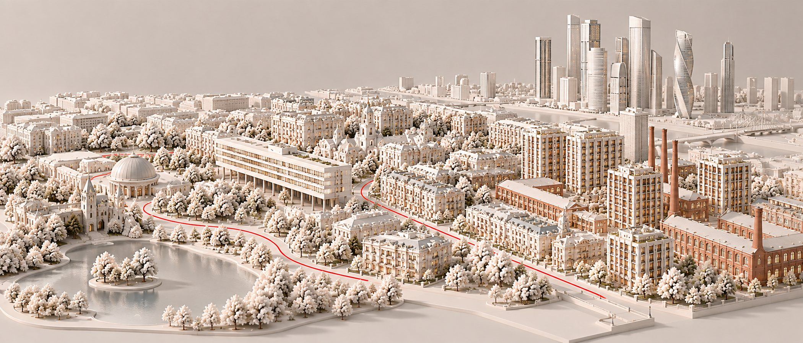
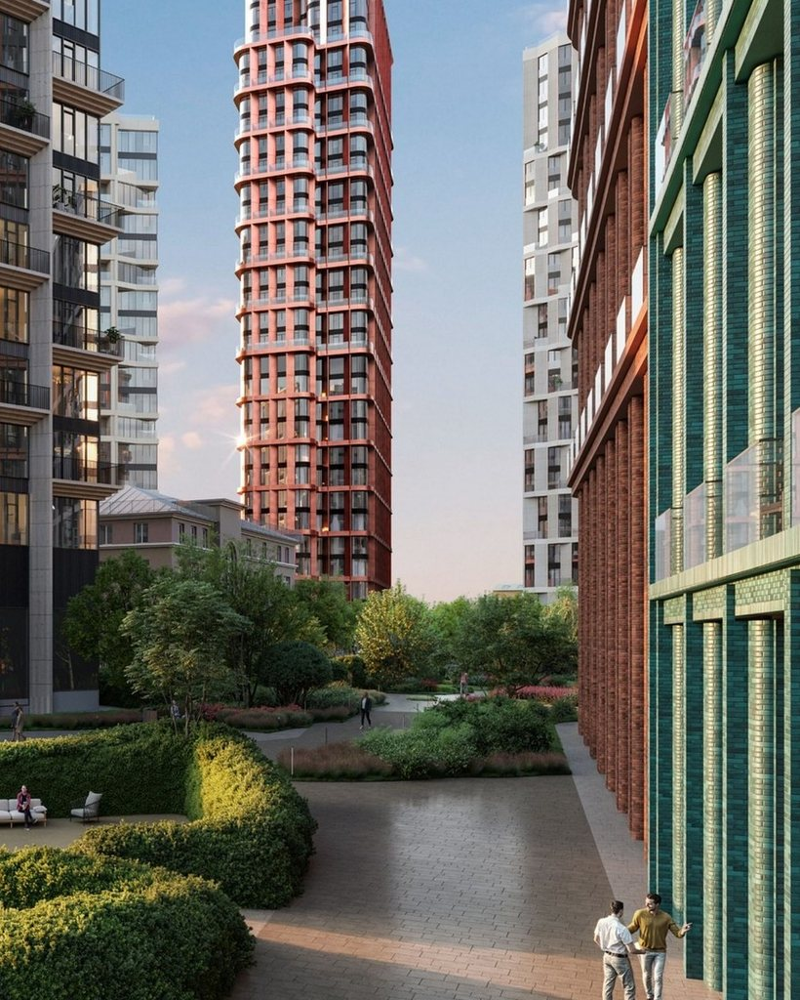

Район · перепроверено 11 октября 2026
Пресня
На заметку: Пресня — это не один район, а четыре: тихие улицы у зоопарка, Тишинка, бывшие фабрики у Звенигородского шоссе и башни Сити на горизонте. У застройщиков метр здесь стоит от 1,05 млн в Republic до 2,80 млн в Доме Спорта — почти втрое дороже внутри одного района.

Откуда цифры
Один район, пять калькуляторов
| Кто считал | Что считал | Цена метра |
|---|---|---|
| «Инком-Недвижимость», сентябрь 2026 | всё вторичное жильё района | 602 тыс ₽ |
| bnMAP.pro, сентябрь 2026 | все новостройки района | 1,6 млн ₽ |
| Kalinka, июнь 2026 | дорогая вторичка: квартиры и апартаменты | 1,5 млн ₽ |
| «Метриум», II квартал 2026 | элитные новостройки | 2,29 млн ₽ |
| NOTA, ЦИАН 10 октября 2026 | 15 домов разбора: вторичка и лоты застройщиков | вторичка — 1,12 млн ₽, у застройщиков — 1,38 млн ₽ |
Между 602 тысячами и 2,29 миллиона — почти вчетверо, и обе цифры верные: одна про весь жилой фонд, другая — про новые дома верхнего сегмента. Москва-Сити в наши 15 домов не входит: это отдельный рынок апартаментов в башнях. По данным Kalinka и ГК «Страна» в пересказе «Москвич Mag», в Сити за первое полугодие 2026 года — 225 сделок на первичном элитном рынке и средневзвешенная цена 1,25 млн за метр.
Красная линия
Семь вещей, на которые здесь стоит смотреть
| Что | Как здесь |
|---|---|
| Место | Три кластера района и Сити. Медиана у застройщиков: у зоопарка — 2,01 млн за метр, на Тишинке — 1,48, у Звенигородского шоссе — 1,32. |
| Вода | Пруды у зоопарка: от Sky View до Большого пруда 217 метров. От Начала и Life Time до Красногвардейских прудов — около 220. |
| Дом | Конструктивизм 1930 года (Дом Наркомфина), фабрики XIX века под жильё (Lucky, Republic, Рассвет) и башни до 50 этажей (Начало). |
| Соседи | От 24 квартир в Fantastic House до 1 313 в Republic: на одной улице — клубный дом и квартал размером с микрорайон. |
| Паркинг | Машиномест на квартиру: в Доме Спорта — 3,2, в Lucky — 1,5, в Начале — 0,93, в Republic — 0,53. |
| Витрина | Здесь 863 новых лота — больше, чем в Дорогомилове, на Сретенке, Чистых прудах и в Китай-городе вместе (484). В Климашкиной 7/11 девять лотов из семнадцати висят дольше полугода. |
| Сценарий | Семья с машиной: школа № 2030 — в трёх минутах от Lucky, Романовская — в двух от Тишинского бульвара. Пешком по переулкам — Тишинка. |

Дом месяца
Lucky
Восемь новых домов по проекту бюро «Меганом» и семь исторических зданий на месте лакокрасочного производства у 2-й Звенигородской. 654 квартиры, паркинг на 980 мест, по нашему паспорту — отметка с одним минусом. Застройщик почти всё продал: у него два лота от 300 м², квартал живёт на вторичке — 21 объявление, однокомнатная от 63,9 млн. Готовый квартал с двором и школой в трёх минутах стоит дороже стройки через дорогу.
«Меганом» использовал перепад рельефа: жилые дворы — на одном уровне, общественные маршруты через квартал — на другом. Фабричные корпуса стали его основанием, а башни — силуэтом.
Без отметки
Три места, где район не проходит собственную линию
Republic
Самый дешёвый метр Пресни — 1,05 млн у застройщика, 907 тыс у собственников. Но 1 313 квартир, 0,53 машиноместа на каждую и минусы окружения и метро: по нашему паспорту — без отметки.
Апартаменты без скидки
Sky View у зоопарка — апартаменты, а метр на вторичке не ниже, чем у застройщика: 1,27 против 1,21. За статус апартаментов обычно дают скидку — здесь её нет.
Долгая витрина
Климашкина 7/11: из 17 лотов девять висят дольше полугода, медиана 256 дней. В Рассвете — 298 дней. В клубном сегменте Пресни цену у застройщика стоит сравнивать с соседями, а не со стартом продаж.
Чего мы не нашли
Цен сделок по району не публикует никто — только цены предложения. Медианы по кластерам мы посчитали сами по объявлениям ЦИАН. У Дома Наркомфина нет ни одного объявления, у Fantastic House — одно: цену там приходится спрашивать.
Обложка сгенерирована для NOTA. Источники: «Инком-Недвижимость», bnMAP.pro, «Метриум», Kalinka — в пересказе РБК Недвижимости (июнь — сентябрь 2026); Kalinka и ГК «Страна» — в пересказе «Москвич Mag» (июль 2026); ЦИАН — выгрузка NOTA 10 октября 2026; база NOTA — паспорта домов; novostroy-m.ru и сайты застройщиков — характеристики домов; наш.дом.рф — число квартир и застройщики, сверка 11 октября 2026.